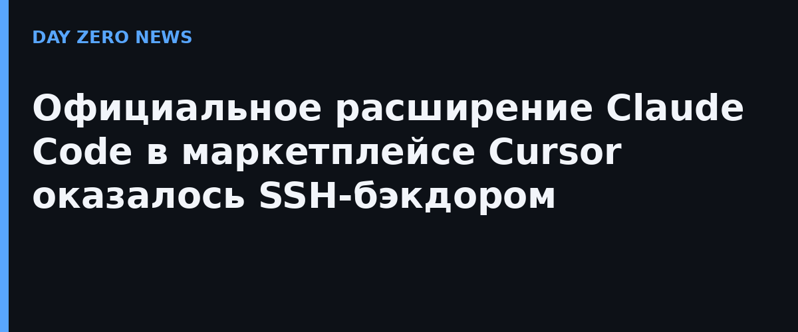

30 октября Cursor опубликовал официальное уведомление о безопасности: пакет Anthropic.claude-code версии 2.1.313, распространявшийся через маркетплейс расширений редактора, был подменён. Вредоносная сборка создана не Anthropic — неизвестные подложили в официальное расширение SSH-бэкдор. Опасная версия висела в маркетплейсе в четверг с 10:27 до 21:35 по центрально-европейскому времени; по оценке Cursor, от неё пострадали не более 5000 пользователей, и компания обещает связаться с каждым напрямую.
Аналитику первым опубликовало исследовательское подразделение Phorion: малварь содержала отдельную логику под Linux, macOS и Windows. Её задачи — положить на машину публичный SSH-ключ атакующих, закрепиться в автозапуске и отправить на сервер сведения о компьютере. Ирония в том, что главный свой замысел бэкдор почти никогда не реализовывал: на macOS он проверял состояние удалённого входа командой, которая без прав администратора выдаёт ошибку и нулевой код возврата, — скрипт считал это штатным ответом и активацию SSH просто пропускал. Ключи, автозапуск и телеметрия при этом доезжали до атакующих в любом случае.
В тот же день Cursor выложил чистую версию 2.1.314, и на неё нужно обновиться как минимум. Важный нюанс: одного удаления расширения недостаточно — бэкдор остаётся в системе. Cursor рекомендует завершить активные процессы SSH-туннелей, затем удалить следы закрепления: на macOS — файл LaunchAgents/com.apple.sysmond.plist, в Linux — cron-запись @reboot, в Windows — запланированную задачу SysMon и её стартовый скрипт. Дальше — удалить файлы ~/.config/.smt и ~/.config/.smtk, убрать ключ svc-telemetry из ~/.ssh/authorized_keys и временные файлы /tmp/.stk_*. Если SSH на машине был включён или найдены следы входящих подключений — менять учётные данные. Phorion дополнительно публикует индикаторы компрометации для самопроверки.
Расширения редактора кода работают с правами самой среды разработки и её пользователя, поэтому один подменённый пакет в маркетплейсе даёт атакующим доступ к исходникам, токенам и ключам на машинах всей аудитории — включая тех, кто доверяет расширению как официальному каналу ИИ-инструмента. Атаки на цепочку поставок остаются самым коротким путём к разработчикам: репутация вендора в имени пакета больше не означает, что код под ним настоящий.